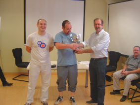
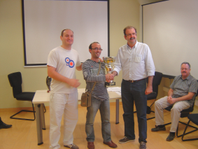

Agustin de Leitza Xake Elkartea |
| » hasiera » elkarteko bazkideak » taldekako txapelketa » azken txapelketak » loturak |
Fortunako pintxetak2010-09-26 Aurten ere gonbidatu gaituzte Fortunako pintxeta txapelketa jolastera. Antolatzaileen idea 8 taldeko liga bikoitza egitea zen, hala ere, han bost talde bakarrik bildu ginen, nahiz eta, gero in-extremis beste Fotunako talde bat atera. Azkenean liga bikoitza egin genuen 6 taldeen artean eta gero semifinalak eta finala. 
Eneko "bere" trofeo jasotzen
Nahiz eta kopurua txikia izan talde onak bilde ziren Fortunan, antolatzaileaz gain, Roldán, Jaumandreu eta Ezpeletakin, Beraunek eta Fomentok ere talde indartsuak aurkeztu zituzten. Eta ezin dugu ahaztu Tolosako taldea Sabinorekin lehen mahaian. 
Enekoren azken txandako aurkaria
"bere" trofeo jastozen.
Gure taldearen partetik hara joan ziren Iosu, Claudio, Aritz eta Eneko. Oso txapelketa irregularra eduki genuen, lehenengo fasean bi txanda galdu genituen, Beraunen kontra eta Tolosaren kontra, gainera, tolosarren kontra, bai Iosuk, bai Claudiok galdu zituzten beraien bi partidak. Hala ere sailkatu ginen semifinalarako, Fomentoren aurka, eta heroia Aritz izan zen, Iosuk eta Claudiok irabazi zituzten beraien partidak eta Enekok galdu zuen bere partida, Artizek gutxienez berdindu behar zuen Ofreren kontra, baian irabazi zuen! Sailkatu ginen finalarako ondorioz, Beraunen kontra, eta argi geratu zen gure irregulartasuna. Iosuk irabazi zuen bere patida, Claudio, Gastañaresen kontra, kontinuo bat onartu zuen, ez zuelako beste irtenbiderik ikusi, nahiz eta "gentleman" bezala jokatu zuen, behar zezakeelako garaipena denoboragatik, baina gehio espero zuen bere taldekideengatik. Aritzek galdu zuen bere partida, baina denok lasai geunden Enekok bi pieza irabazi baitzituen, baina bi mugimenduetan mata izan ordez kontrakoa pasa zen eta berak bi mugimenduetan jaso zuen! Azkenean, beraz, bigarren, hori bai oso ondo jan genuen. |